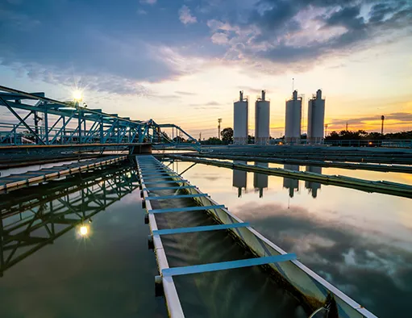
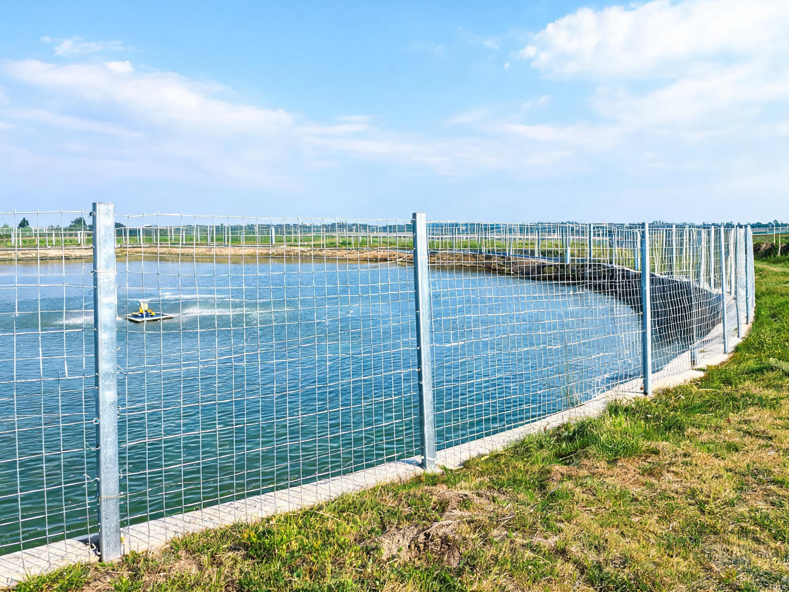
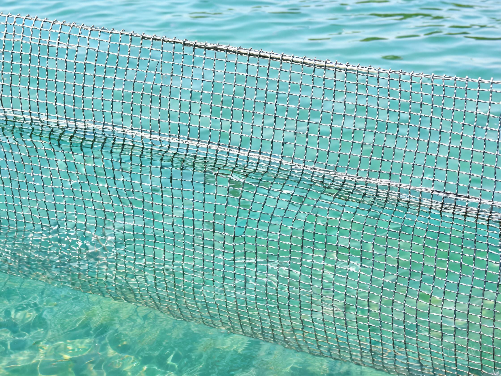
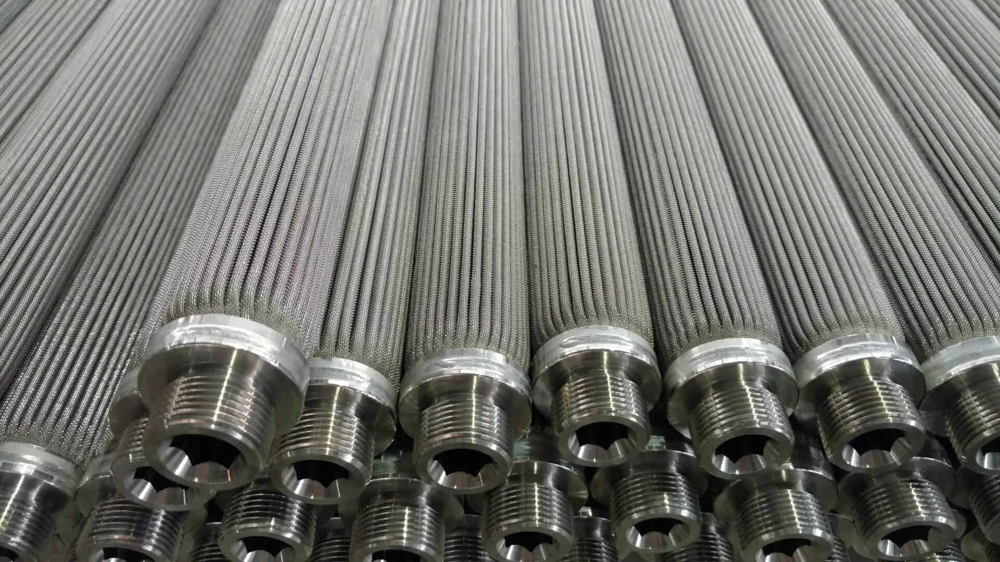
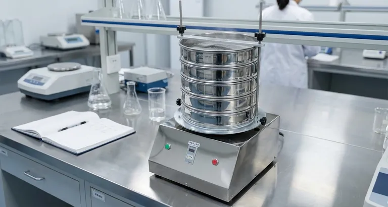
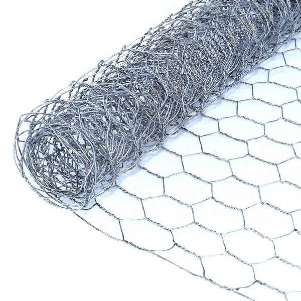
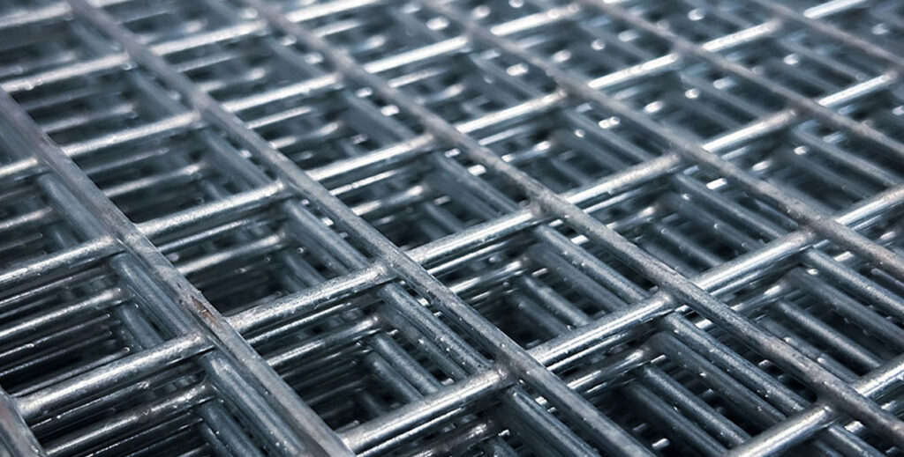

Hexagonal Wire Mesh: A Simple Solution with Global Impact
How hexagonal wire mesh serves aquaculture, fish farming, and sustainable food production worldwide.
Read MoreFish cage netting, pond protection, shrimp farming enclosures, and water intake screening — engineered for the demanding conditions of modern aquaculture and fish farming operations.
Aquaculture operations require wire mesh solutions engineered to perform in continuous immersion and aggressive marine environments. From offshore fish cage netting and inland pond perimeter protection to shrimp farming enclosures and water intake screening, Kestrel Metal supplies corrosion-resistant mesh products that safeguard fish stocks and protect critical infrastructure.
Our hot-dip galvanized and PVC-coated wire mesh is purpose-built for marine and brackish water applications, with marine-grade 316L stainless options for the harshest conditions. Every product is manufactured under ISO 9001 quality controls and supports sustainable aquaculture operations across 30+ countries worldwide.

Specialized wire mesh and fencing products designed for the demanding conditions of modern aquaculture and fish farming operations.
Galvanized and PVC-coated wire mesh engineered for fish cages and offshore aquaculture enclosures. Designed to withstand continuous saltwater immersion, wave action, and predator pressure while maintaining optimal water circulation for healthy fish stock development in both inland and marine farming operations.
View Product
Perimeter fencing systems for aquaculture ponds designed to prevent predator intrusion and unauthorized access. Heavy-gauge galvanized mesh with anti-climb aperture sizing deters birds, mammals, and other predators while withstanding prolonged exposure to moisture, splashing, and humid farm environments.
View Product
Fine mesh woven wire screens for shrimp farming enclosures, hatcheries, and grow-out ponds. Precisely controlled aperture sizes prevent shrimp escape while allowing water exchange and natural feed flow. Corrosion-resistant construction ensures long service life in brackish and saline water conditions typical of shrimp operations.
View Product
Stainless steel mesh screens for aquaculture water intake systems, preventing debris, wild fish entry, and organism intrusion into farm water supplies. Engineered for continuous flow conditions with precise aperture sizing that protects pumps and infrastructure while maintaining the water volume required for intensive farming operations.
View ProductWe understand the unique challenges aquaculture professionals face — and we engineer solutions to address each one.
Continuous exposure to saltwater and harsh marine environments rapidly degrades untreated steel, shortening the service life of aquaculture mesh products.
Hot-dip galvanized and PVC-coated marine-grade wire delivers long-term corrosion protection, with 316L stainless options for the most aggressive saltwater and brackish conditions.
Birds, mammals, and other predators threaten fish stocks and shrimp populations, causing significant losses for aquaculture operations.
Strong mesh enclosures and anti-predator fencing with heavy-gauge wire and optimized aperture sizing physically deter predators while maintaining water flow and stock safety.
Maintaining proper water circulation and dissolved oxygen levels is critical — mesh that restricts flow can harm fish health and growth rates.
Optimized mesh aperture sizes balance predator exclusion, stock containment, and water exchange to maintain the circulation and oxygen transfer required for healthy aquaculture systems.
Algae, barnacles, and other organisms build up on submerged mesh, reducing water flow and increasing maintenance burdens for aquaculture operators.
Smooth PVC coating reduces biofouling adhesion, making cleaning easier and extending intervals between maintenance while protecting the underlying wire from corrosive attack.

Marine-grade galvanizing with heavy zinc coatings engineered for continuous immersion in saltwater and brackish aquaculture environments.
PVC-coated options providing an additional protective barrier against corrosion and reducing biofouling adhesion on submerged mesh.
Corrosion-resistant 316L stainless steel mesh for the most aggressive marine conditions where maximum service life is required.
Custom mesh apertures tailored to species, water flow requirements, and predator exclusion needs for each aquaculture operation.
Anti-predator designs engineered with heavy-gauge wire and optimized geometry to defend fish stocks against birds, mammals, and other threats.
Sustainable aquaculture support with durable, long-life products that reduce replacement frequency and minimize environmental impact.
Our products meet the international standards and certifications relevant to this industry.
Quality management system governing aquaculture mesh and netting product manufacturing.
Salt spray testing standard verifying corrosion resistance of marine-grade coatings.
Materials compliant with NSF standards for aquaculture and food-contact water applications.
Environmental management system supporting sustainable aquaculture practices.

How hexagonal wire mesh serves aquaculture, fish farming, and sustainable food production worldwide.
Read More
Compare hexagonal mesh and gabion mesh for aquaculture and water management applications — strength, coating, and use cases.
Read More
Explore wire mesh products used in aquaculture from fish cage netting to water intake screening systems.
Read MoreContact our engineering team for project-specific product recommendations, custom specifications, and competitive pricing.